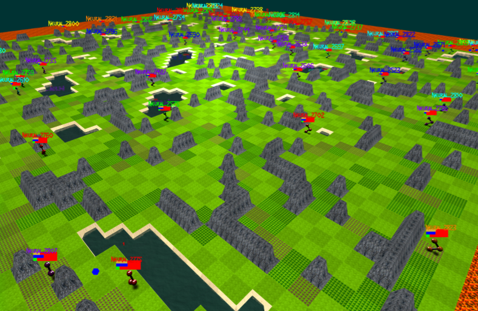
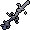

 Welcome to the Platform!¶
Check out the quickstart guide.
Skim the Trinity documentation for Pantheon/God/Sword.
Head over to the /projekt in the source and familiarize yourself with the end-to-end “demo”. This is my personal research code on the platform.
Join our Discord for help and discussion!
This is an open source project. Contributions are encouraged. I actively review issues and PRs.
Overview¶
This environment is the first neural MMO; it attempts to create agents that scale to real world complexity. Simulating evolution on Earth is computationally infeasible, but we can construct a reasonable and efficient facsimile. We consider MMORPGs (Massive Multiplayer Online Role Playing Games) the best proxy for the real world among human games: they are complete macrocosms featuring thousands of agents per persistent world, diverse skilling systems, global economies, and ad-hoc high stakes single and team based conflict.
Version History¶
1.1: Infrastructure and API rework, official documentation and Discord
1.0: Initial OpenAI environment release
Namesake¶
In formal publications, we refer to our project as simply a “Neural MMO.” Internally and informally, we call it “Projekt: Godsword.” The name comes from two sources: CD Projekt Red, my personal favorite game dev studio, and OldSchool Runescape, which contains an iconic set of weapons called god swords. The latter is a particularly good model for AI environments; the former is more of a soft flavor inspiration.
Disclaimer¶
I originally began this problem independently. I continued working on it and released v1.0 during a 6 month internship and collaboration with OpenAI. The client was a collaboration between myself and Clare Zhu. The environment has since been my main project. I plan to continue developing it as an EECS PhD candidate at MIT under Phillip Isola until someone convinces me that there is a better way to solve AGI.
Everything written in the source and documentation is my own opinion. I do not speak for OpenAI, MIT, Clare, or Phillip.
Authorship and License¶
I, Joseph Suarez, am the author of the environment code base. Yilun Du assisted with running experiments and particularly in setting up tournaments. Phillip Isola and Igor Mordatch have been invaluable collaborators and advisers throughout the project. The environment is registered to OpenAI and available under the MIT license. There is a smaller original code base and game kernel that I (Joseph Suarez) retain ownership of, along with associated ideas. I created these before my employment – the initial commit of the OpenAI neural-mmo repository represents the latest pre-employment timestep.
The client was developed independently as a collaboration between myself and Clare Zhu. It was originally created as follow-up work for the paper and blog post, but we ended up merging it in. This is also the reason that the project is split into two repositories. It is registered to us jointly and available under the MIT license.
Assets¶
Some assets used in this project belong to Jagex, the creators of Runescape, such as


We currently use them for flavor as an homage to the game that inspired the project. We believe these fall under fair use as a not-for-profit project for the advancement of artificial intelligence research – however, we are more than happy to remove them upon request. We do own the 2D and 3D files for agents.